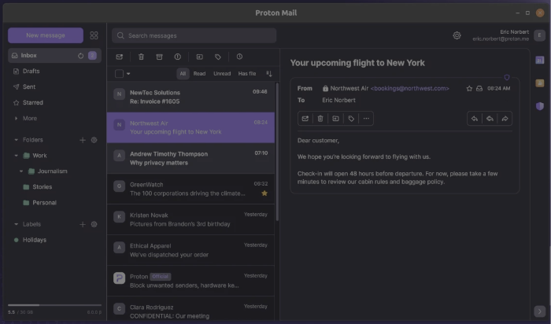
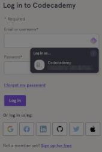
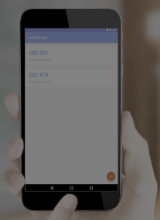
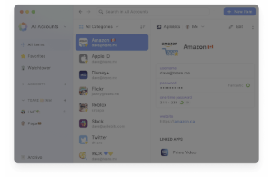

$ ~/privacy
- published
- reading time
- 6 minutes
The internet is a wonder of the modern world. It can bring a wealth of information and communication to our fingertips, keeping us connected and informed daily and every hour.
However, there is a darker side to the internet that is all too familiar in the news nowadays, where big corporations and hackers collect, steal, or sell our data.
How often have you been conversing with your family or friends and suddenly started seeing adverts for the same subject later on your phone via social apps or websites you browse?
This data can be significant for companies to show you the most relevant advertisements for your interests, but it can also be used against us by scammers and hackers.
With recent increases in spam, fake ads, and phishing campaigns, let’s examine what can help keep your data private and make the recovery process from being hacked easier.
Note: This is high-level, and obviously, there is more on the subject of privacy which you can research. (links below)
Browsers
One quick and easy way to reduce sites from tracking you is to use a browser that removes these trackers from the website.
These offer great privacy settings, keeping your browsing private even without using incognito mode. DuckDuckGo and Brave are based on Google Chrome and have a similar feel, so you can use something familiar without your data being compromised.
Firefox and LibreWolf (based on Firefox) are long-standing browsers prioritising privacy. Like Brave and DuckDuckGo, they remove trackers and some advertisements without the need for add-ons.
Search engines
The term “googling” is now the default term when searching for something on the internet, and again, this marvel of technology is not without its issues around privacy.
DuckDuckGo and Brave Search are great alternatives. Their browsers maximise Google’s technology without engaging in creepy data farming.
All browsers I recommended previously provide settings to change your search engine default, and DuckDuckGo is one of those choices. (Microsoft Edge, Chrome, Arc and Safari also offer this option if you keep your current browser.)
If you are as old as I am, your first email account was your name and year of birth in some kind of order back in the days of MSN Messenger and Hotmail.
Things have moved on, and using your name and year of birth provides data to a hacker without even trying to hack. They can then use that information to hack your accounts by arranging it into various password versions. These attacks are called brute-force attacks or password sprays.
Having a Google account again is excellent and convenient, along with services like Google Drive, but they track and store your data. As mentioned, we want to be more cautious about who has our data. So Proton Mail is an excellent alternative with Drive, Documents, and Password Manager. (more on the password manager later)
I will use ted_of_tedfordshire in this example as it is simple and doesn’t immediately identify personal details.
Sites like usernamegenerator.io can help you generate a random username or base it on non-specific choices like colours, animals, and pop culture.
Proton, like Google, has a suite of apps that you can use, but with the bonus of storing your data on encrypted servers and removing trackers from your emails.

Hiding Your Email Address
Proton has a built-in feature where you can provide your logins with a dedicated email alias, which will then be forwarded to your new secure email account.
You can also use this with other email services, such as Gmail, Hotmail, Outlook, etc., by creating an account with SimlpleLogin (part of Proton) or Relay from FireFox and setting up the aliases there.
Password Managers
Password managers are great for creating a new password for every login and only remembering your master password.
These apps have various browsers and mobile plugins that allow you to log in quickly to any device. Most also have an autofill function, meaning that your username/email address and super safe and secure password are populated in one click, and you can click “login”.

Recommendations:
- 1Password (paid)
- ProtonPass (free & paid options)
- Bitwarden (free & paid options)
- Dashlane (free & paid options)
Password managers offer much more than keeping passwords safe; they also protect other vital data, such as credit card information, identification, passports, licenses, and medical details.
The paid options provide more features than the free versions and can offer family subscriptions. Some of the features I mention are in the paid versions, and you’ll need to check each vendor’s pricing/feature tables.
These password managers can also check your details against the dark web and known data breaches, suggest replacement passwords, and provide reports on repeatedly used passwords and their security.
Multi-Form Authentication (MFA)
Multi-form authentication (MFA) or Two-Factor Authentication (2FA) involves providing a code or biometric (face or fingerprint scan) as well as your password to prove who you are when logging in.
These methods are timed to a minute or two before changing or requiring you to rescan your face or fingerprint. Most modern phone users will be familiar with MFA technology when logging into their phones. iPhones, for instance, ask for a face scan, and Android phones generally ask for fingerprints.
One of the best-added layers of security is to enable MFA (where possible), which may require a One-Time Password (OTP) and an authentication app to generate the code.

The neat thing about password managers is that they can also provide this feature and auto-populate the code when you log in, saving the panic of finding your phone and then trying to get the code in before the time runs out.

Summary
As you can gather, Password Managers are simple and powerful ways of managing your login details and ensuring your security. Most of the ones recommended here offer a family subscription or one-off payment.
Proton offers a complete package that includes mail, documents, a password manager, and email aliasing in one ecosystem. It has a familiar feel to Google that most users will be comfortable using. You are at a good starting point with the Brave browser instead of Google Chrome, Proton and Google Search being replaced with DuckDuckGo.
Ted
Note These recommendations are based on my use and experience, and I am not sponsored or paid to promote the companies mentioned here.